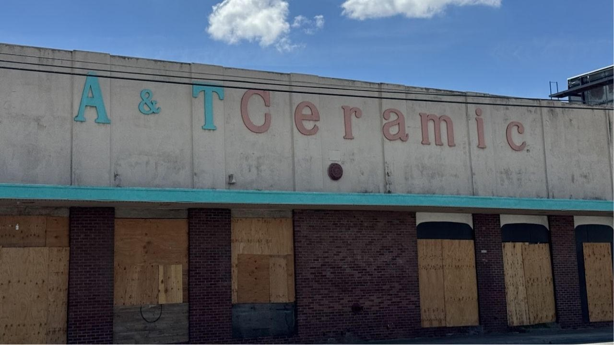
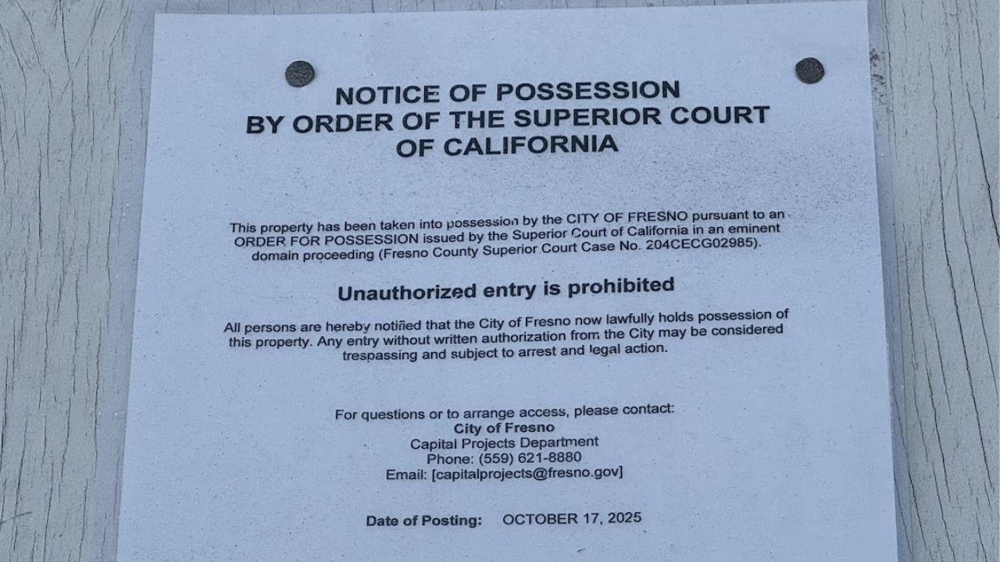

Record
- Property
- 1780 E. McKinley Ave. · APN 451-071-35
- Business
- A&T Ceramic / Art A. Terzian
- City case
- Fresno v. Terzian · 24CECG02985
- Possession
- Prejudgment order 25 March 2025 · locks 17 Oct 2025
- Fire
- 13 Feb 2026 · about 4:15 a.m. · treated as intentional
- Auction noticed
- Monday 21 Sept 2026 · 9:00 a.m. on site
The record is public, messy, and larger than a 90-second package. What follows is the verified sequence, and a hard line between what is documented and what is not.
On the morning of Friday, 13 February 2026, around 4:15 a.m., firefighters were called to 1780 East McKinley Avenue. The building was A&T Ceramic Tile, a wholesale and retail shop that had sat just east of Blackstone Avenue, near Fresno City College, since 1995.
Three days earlier the owner, Art Terzian, had told ABC30: “I’m thinking I’m going to be next.”
He was.
Investigators treated the fire as intentional. City Attorney Andrew Janz went on camera that night and said the city had “suspects in mind,” then added a sentence that became the city’s story of the whole affair: the delay was Terzian’s, and if anything happened to the inventory still locked inside a building the city already possessed, “it’s going to be on him, and not the city.”
That is the compressed version. The uncompressed version is a collision of a public-works machine, a family business that would not fold on the city’s timetable, a private land-sale lawsuit that ballooned into a $15.6 million judgment, a cluster of fires in city-controlled vacant buildings, and a vocabulary — unhoused, warming fires, felon, no property interest — that did political work while the physical facts sat in the open.
The shop, the man, the intersection
A&T Ceramics was a flooring and wall-tile business run by Art A. Terzian, also known in court files as Avedis Aram Terzian, with his son Tony. In a February 2025 declaration filed under penalty of perjury, Art said the family had been in the trade more than 35 years, at that McKinley address since 1995. They sold ceramic tile, granite, marble, travertine, and glass mosaic, imported mostly from Italy, Spain, and China, to contractors and to walk-in retail.
The parcel is about 0.88 acres, roughly 28,000 square feet of buildings. Title was later placed in the Granett Investment Trust dated 8 August 1985, with Terzian as trustee. The city’s eminent-domain complaint treated that transfer with suspicion because it was not title-insured.
The intersection is not a quiet corner. Blackstone and McKinley sit on the BNSF mainline. City figures used to sell the project: more than 35 trains a day (Mayor Jerry Dyer has used 37), about 42,000 vehicles, average delay of nearly three minutes per train. Dyer, announcing an $80 million state grant in July 2023, said four people had been killed by trains at the crossings in the prior ten years. A CPUC nomination packet later listed fatal collisions on those approaches, including deaths in 2016, 2018, and 2019. Another pedestrian was struck and killed near the same intersection in July 2025, after the project had already been funded and before construction had begun.
The safety case for a grade separation is real. That is not in dispute. What is in dispute is whether that case required the fee-simple taking of this particular family’s entire parcel, on these terms, on this timetable, and whether the city, once it had the keys, owed the man whose livelihood was still stacked in pallets inside.
The money, and what it is not
The Blackstone-McKinley BNSF Grade Separation Project would drop both streets as much as 25 feet and send cars, buses, bikes, and pedestrians under new railroad bridges. Officials compare it to the underpass at Shaw and Marks.
The cost has not been a stable number. Early Measure C talk put the job in the $70 to $80 million range. By the July 2023 grant announcement: $151.9 million. Later city and Bee reporting: about $162 million. A June 2025 CPUC nomination packet listed $202.3 million.
The largest single check is not a federal homelessness grant. It is $80 million from the California State Transportation Agency’s Transit and Intercity Rail Capital Program, the largest award in that statewide round. The rest is mostly Measure C, Fresno County’s half-cent transportation sales tax, plus a smaller Local Partnership Program allocation of about $3.9 million.
That distinction matters because a popular theory of this fight is that federal dollars for the unhoused are what mowed Terzian down. The grade-separation machine is a state-and-local transportation stack. Homeless-services money is a different stack: HHAP rounds, hotel conversions, Hope Pointe on North Blackstone, Travel Inn, Valley Inn, and, as of late 2025, a $4.2 million city vote to keep three shelters open, later a $10.49 million HHAP-6 award. Those dollars are real. They are concentrated on and near Blackstone. They are not, on the public documents, the same appropriation that pays for the underpass.
What is true of the underpass money is the thing every grant officer understands: deadlines. In the city’s March 2025 motion for prejudgment possession, Austin Bain’s declaration told the court the city could not wait for trial because delay risked loss of funding, construction was slated for spring 2026, and the city needed about six months to vacate and demolish. That is the bureaucratic heartbeat of the case. A grant that is “fully funded” on a press release is not fully spent until dirt moves. Dirt does not move while a tile warehouse is still standing.
As of June 2026, Public Works Director Scott Mozier was telling the Bee that the last businesses at the intersection, including Dutch Bros, would vacate by the end of 2026, with utility relocation and bridge work expected in 2027. The 2026 start date slipped. The buildings burned anyway.
What Terzian said the taking was for
This is the argument local television almost never holds on screen long enough to test.
Terzian’s position, from the 18 April 2024 City Council hearing on Resolution of Necessity No. 469 through his February 2025 court declaration, is that the city wanted his entire parcel for a temporary construction road, a detour that would save roughly six months, not because the finished underpass needed the whole site. He said assistant public works director Andrew Benelli surveyed the shop in 2023 and that the lowered grade would stop just short of the west side of the driveway. Terzian offered to dedicate about eight feet of sidewalk frontage and keep the rest.
His then-attorney, Benjamin Tagert of Sacramento, told the Fresno Bee in 2024: “The city is proposing to uproot him and a dozen other businesses from where they’ve been operating for years for a temporary road. That’s not right.”
The city’s answer, from engineer Cassie Scholz, is not “it is only a detour.” It is that the project footprint hits the front of the building and that the vertical drop between the existing driveway and the lowered street would destroy access. “There will no longer be access available to be maintained to the parcel, the way everything is laid out right now.”
Both things can be in the file at once: a construction-phasing need and a finished-grade access problem. California eminent-domain law (Code of Civil Procedure section 1240.030) still requires that the taking be necessary, planned for the greatest public good and the least private injury. Once a city council adopts a resolution of necessity, that finding is conclusively presumed except in a narrow window for gross abuse of discretion. The council adopted the resolution over Terzian’s objections on 18 April 2024. In his declaration he called the temporary-road use a “pretense and sham,” and said the real end-state was private redevelopment after the underpass was built. That is an allegation. The resolution is a legal wall.
He also said, on the record at council: “I’m not against the project.” He asked to sell frontage, not the shop.
The offer on the table after appraisal was in the $2.1 to $2.26 million range. The city later deposited $2,259,500 with the State Treasurer as probable compensation. A separate appraisal of “improvements pertaining to the realty,” fixtures, not the stacked inventory, came in at about $59,500. Terzian said comparable space with a showroom and warehouse was listing at $3.4 to $7 million, that professional movers quoted more than $1 million and two to three months of work, and that he needed 28,000 to 30,000 square feet. A 5,000-square-foot warehouse, he told council, could run $700,000 by itself.
Those numbers never met in the middle. The city says he never made a counteroffer. He says the city’s number was not a real relocation. Under California’s Relocation Assistance Act, a public entity that displaces a business is supposed to provide relocation assistance. City records later showed the council approved up to $1.1 million for moving, a year of storage, and insurance. Terzian says he never received it. Janz says the city set aside $1.5 million to move the tile and Terzian “impeded every attempt.”

How the city got the keys
| Date | What happened |
|---|---|
| 11 Oct 2023 | Statutory offer of just compensation after appraisal |
| 18 Apr 2024 | Council Resolution of Necessity No. 469 |
| 12 Jul 2024 | City of Fresno v. Art A. Terzian, case 24CECG02985, filed |
| 25 Mar 2025 | Judge Kristi Culver Kapetan grants prejudgment possession. Hardships, the court said, could be addressed with money. Trial was then set for 9 March 2026. |
| 17 Oct 2025 | Tony Terzian is inside with a customer. Police arrive. City changes the locks. He is ordered out in minutes. Locks are drilled and cut. |
| Nov 2025 | ABC30 films the boarded shop. Art: “I don’t know how they own it. I didn’t get a red penny from them.” Inventory still inside. He puts the value over $3 million. |
Prejudgment possession is not a final judgment on just compensation. It is a court order that lets the public entity occupy while the fight over money continues. The deposit of $2,259,500 is the city’s number, not a verdict. Art’s “I didn’t get a red penny” is, in a narrow legal sense, consistent with that structure. The money sits with the State Treasurer, and competing claimants appear in the caption: the city, Terzian, the trust, Hold Home Finance, the California Department of Tax and Fee Administration, and Brooke and Gina Ashjian.
Council President Mike Karbassi, in November 2025: the city offered to pay to move the inventory; the Terzians had not taken the offer. “When you resist and resist and resist, it’s going to be a harder process. I get where he’s coming from, but at the same time, there is a public benefit from this.”
Tony’s description of 17 October is the part that does not photograph well: a working business, a customer just gone, officers at the door, minutes to leave, a lifetime of tile on the other side of new locks.
Seventeen vacant buildings, a fence cut every day
By early 2026 the city controlled at least 17 vacant properties at the intersection. Some purchased. Some taken. Carl’s Jr. at the northwest corner. A Taco Bell. Star Stucco Products. Industrial yard land bought from Rocking Rail LLC for $4.5 million. A&T.
Vacant commercial buildings in a corridor that already has a dense shelter and street population are a known fire load. City Manager Georgeanne White told the Bee editorial board in 2024 that firefighters had responded to more than 900 “warming fires” that year to date; 3,797 the year before; 4,079 the year before that. Councilmember Miguel Arias has said such fires happen every night in cold months, and that the old practice was often to let a trash-can fire burn if it did not threaten a structure.
That is the municipal language: warming fires. Not arson. Not even, usually, illegal campfire. The compassion word does real work. Sometimes the fire is a barrel. Sometimes it is a boarded Carl’s Jr.
On 28 January 2026, at 6:09 p.m., the vacant Carl’s Jr. at 1611 N. Blackstone went up. Crews went defensive in about 13 minutes. The city owned the building. White told the council the next morning that bids for demolition had opened 20 January, that unhoused people had repeatedly broken in, that the city kept boarding it up, and that demolition would now be delayed because the site had become a hazardous-materials problem. She also said, in a line that would be replayed after the next fires:
“My spidey-senses were tingling on Carl’s Jr. I was pinging the staff, saying, ‘When are we demoing? When are we demoing?’ I knew this would happen.”
She knew. The building burned anyway. The grant-funded underpass was still, at that point, a year or more from heavy construction.
On Sunday, 8 February 2026, after 6:30 p.m., fire took the vacant Star Stucco and industrial buildings on the city-owned three-acre tract east of the tracks. Battalion Chief Kirk Wanless called it “highly suspicious.” The building had no power, no gas, and, he said, did not appear to be in regular use as shelter. “It’s harder for me to see that it was an unintentional fire that got away. That leads me to conclude that it was somewhat intentional.” Tracks were closed for 30 minutes.
ABC30 reported investigators saying unhoused people may be tied to at least one of those fires. White, on camera: police are patrolling, “but there are a lot of buildings and a lot of opportunities for people to get into buildings.” The fence, she said, “gets cut through nearly every day,” and the city fixes it “just like any other private property owner.”
On Tuesday the city tore down the old Taco Bell so it would not be next. White: “I wish we could do them all at once.” That same week, ABC30 found an unauthorized woman on the A&T lot, city-controlled land. Tony had been saying the back fence was cut.
On Tuesday, 11 February, Art Terzian said he would be next. On Friday, 13 February, at 4:15 a.m., a fire was set in his showroom. The structure, officials said, took less damage than the contents. Handmade Mexican tile, samples, the front of a life’s inventory. He had no insurance. “That’s part of life,” he said. “What else am I going to do?” No arrest for the A&T fire has been publicly announced in the reporting since. Janz’s “suspects in mind” did not become a named defendant in the local coverage that followed.
What the fire cluster proves, and what it does not
Documented
- The city took possession of a dense cluster of commercial buildings years before it could demolish or rebuild them.
- The city manager said, on the record, that she knew the Carl’s Jr. would burn if it was not demolished, and that it had been repeatedly entered.
- Fences were cut daily. Patrols did not stop entries. ABC30 filmed a person on the A&T lot while it was supposedly under city control.
- Two of the first fires were called suspicious or likely intentional by fire officers. The A&T fire was called intentional. It came at 4:15 a.m., inside the overnight window when vacant-building fires in this city are routine.
- Officials and investigators repeatedly reached for unhoused people, warming fires, and transient population as the explanatory frame, including for fires a battalion chief said did not look like accidental shelter fires.
- After the fires, demolition suddenly became urgent, “years before construction begins,” as ABC30 put it.
- Janz’s later statement blamed Terzian’s refusal to move inventory for a fire at a building the city already possessed.
Not documented
- That the City Council, the city manager, or the police directed anyone to set those fires.
- That unhoused people function as a municipal army or pets paid with federal dollars to punish political enemies.
- That the A&T fire was ordered, as opposed to enabled by vacancy, delay, and a cut fence.
- That “homeless” and “arsonist” are the same person in any of these three fires. No publicly identified arrestee ties those labels together at this intersection.
Failure to protect a building you already own, after your own city manager said she knew it would burn, is a governance fact. It is not the same fact as command of arson. A city can be reckless with vacant inventory, linguistically invested in a soft noun, and still not be a conspiracy. Those are already damning enough without the extra step.
The phrase “spidey senses” is not a confession of a plot. It is an admission of foresight without action. After prejudgment possession, the public entity is not a bystander. Janz’s on-camera attempt to assign all subsequent loss to Terzian is an argument, not a finding.
Bobby Salazar is a different fire
Blackstone Avenue has another arson story, and it is easy to solder it onto this one because it is the same street and the same word, fire.
Robert “Bobby” Salazar, founder of the Bobby Salazar’s restaurants, has been charged with arson of a commercial property and arson in furtherance of a felony. Prosecutors say he hired Thomas Qualls, identified as president of the Screamin-Demons Motorcycle Club in Sanger, to set the 2 April 2024 fire at the Blackstone location south of Shields, around 1:30 a.m. The vacant building burned again in May 2026.
That is an alleged private arson-for-hire case: a businessman, a motorcycle-club president, street enforcement. It is not evidence that the City Council retains the unhoused as a deniable fire service. Treating the two as the same modus operandi, warming fires as the municipal version of Molotovs, is a rhetorical comparison. It is not a charging document. If a later investigation names a paid torch at Carl’s Jr. or A&T, that will be a different article. As of the last public reporting, it has not.
The city’s lawyers cited law that did not exist
While the buildings were burning, the city’s outside firm was asking a judge for a writ of assistance, a court order to go in, pull the pallets, and make Terzian pay to store them.
The application was filed 31 December 2025, signed by attorney Carrie Raven of Aleshire & Wynder LLP, the firm Fresno uses for a run of land-use fights. On 24 February 2026, Judge Kapetan issued a ruling that should have been a bigger civic event than it was.
She found more than ten problems in the citations. Four cases, she wrote, “do not exist either at the citation or by its case name.” A cited statute did not exist. Other authorities were misquoted or did not say what the brief claimed. “The court determines that legal contentions made by counsel for plaintiff were not warranted by existing law as represented through counsel’s signature and filing of the application.” She set an order to show cause that could have meant $10,000 per incident.
Raven was gone from the firm by 26 February. Partner Anthony Taylor later told the court he had been diagnosed with Hodgkin’s lymphoma in September 2025; partner Michael Linden had a medical emergency the same month; Raven had been hired as coverage. Taylor said he did not know about the fake cites until the tentative ruling. The judge did not find that AI was used. She also did not need to. Nonexistent case law was in a filing that sought to empty a man’s warehouse.
The city withdrew the writ inside the 21-day safe-harbor window. The 14 April 2026 sanctions hearing was vacated. No fine. Janz: “We’re happy that’s behind us, and we’re going to move forward.” He praised the firm. The city, he said, would not pay for the cleanup; the firm would. How much Aleshire & Wynder has billed Fresno on this one case was not disclosed. A public agency tried to leverage a brief containing imaginary law in order to finish a taking. It suffered no sanction. The inventory stayed put until a different creditor found another way in.
The other case: Ashjian, $15.6 million, and the word felon
This is the layer that, in a two-minute package, gets laid on top of the taking as if it were the same fight.
In 2021, Brooke and Gina Ashjian sued Art Avedis Terzian in Fresno Superior Court, case 21CECG02233, over a contract to sell roughly five acres. A different property. Not the tile shop. They alleged he refused to close escrow. They pleaded breach, specific performance, and promissory fraud. The fraud count was later dismissed. Terzian answered, then failed to respond to requests for admission, which were deemed admitted.
A judgment of about $4.07 million was entered 20 December 2022. Sheriff’s sale notices in 2024 listed that figure against other Terzian real estate, including 2230 N. Blackstone. The Fifth District Court of Appeal, on 7 June 2024, reversed the judgment in its entirety and sent the case back, including on the question of whether claimed lost profits were too speculative. The Ashjians’ theory involved a planned apartment project and a tenant deal that appeared to depend on further HUD and county approvals.
The case was retried in March 2026. In April 2026, a judge awarded the Ashjians $15,589,289 in lost-profit damages for breach. Terzian is appealing again, on the same core objection: the apartments were never built; the number is speculative. His lawyer has asked the Court of Appeal to stop the tile auction pending that appeal.
Separately, the Fresno County District Attorney in 2023 filed 14 felony counts of fraud, forgery, and related charges against Avedis Aram Terzian, alleging forged real estate documents in December 2022. As of April 2026 he was 78 and heading toward a June 1 pre-preliminary hearing. That is an accusation, not a conviction. GV Wire was careful to call it “an unrelated case.” KSEE, interviewing Janz about the eminent domain dispute on 16 September 2026, was not.
Janz’s on-camera sequence in that story was: we tried for two years; he was unwilling; we set aside millions to move tiles and buy the building; a lien means he no longer has a financial interest; he owes over $15 million from a lawsuit filed last year; he faces multiple felony charges related to the lawsuit; the sheriff will auction the tile on Monday to recover what he owes.
Watch what that sequence does. It takes a still-open constitutional fight about just compensation for a public taking, and it recodes the property owner as a debtor-felon with no remaining stake. The viewer is not told that the $15.6 million is a private judgment on other land, already reversed once, now on appeal again. The viewer is not told that felony counts from 2023 have not been tried to a verdict in the coverage. The viewer is not told that even a lien-encumbered owner is still owed just compensation. The money simply lines up behind creditors. The viewer is not told that the city’s own deposit, $2,259,500, is sitting in the State Treasury because the law requires an offer of probable compensation, not because the owner has been paid.
Brian Whelan, the Ashjians’ lawyer, was more candid than the city in a statement to FOX26 this week: “I understand the City has been spending thousands of dollars each month to secure the A & T building and guard the tile. Selling the tile to satisfy my clients’ judgment will also help clear the way for the City to move forward with its planned public works project — something Mr. Terzian has repeatedly obstructed. We are actively working with the City to come to terms to assist the City.” A private judgment creditor, in other words, is coordinating with the city to empty the warehouse the city’s own writ could not empty after the fake-citation fiasco. That is not illegal. It is also not unrelated. It is the workaround.
Monday’s auction, and what “no property interest” gets wrong
The Fresno County Sheriff noticed a public auction for Monday, 21 September 2026, at 9:00 a.m., at 1780 E. McKinley: tile, equipment, forklifts, racks, shelving. Terzian now puts remaining pallets at about 2,300, retail value about $3.5 million. Earlier he and Tony used 2,900 pallets and “over $3 million.” The city’s IPR appraisal of $59,500 was never an inventory appraisal. It was a fixtures number. Those two figures have been allowed to sit in the same news stories without a translator.
Terzian, on the sidewalk this week: “If I cross this line, I get arrested. The city owns it. I’ll be trespassing.” He says he was promised a comparable building, help moving shelving, a transition. “Big, big promises never happened.” He wanted to move the tile himself if the city paid the actual cost. Correspondence FOX26 reviewed shows the city’s counsel accusing him of refusing a moving agreement; his counsel accusing the city of refusing the relocation assistance he asked for.
The city told FOX26 it is not a party to the Ashjian collection and will not receive auction proceeds. That may be true as a matter of who cashes the check. It is not true as a matter of who benefits if the warehouse is finally empty.
California eminent domain still requires just compensation for the real property, and relocation law still exists for the business. A judgment lien can swallow the owner’s equity. It does not repeal the Fifth Amendment or article I, section 19 of the California Constitution. “He has no property interest” is a creditor’s talking point. It is a dangerous one in a city’s mouth, because the city is the taker.
What the packages leave on the floor
A typical package has three beats: man says he wasn’t paid; city says it tried for years; here is a railroad project that will save lives. If there is time, a fire shot. If there is more time, “he also faces felony charges.”
What that structure cannot hold:
- The grant clock as a party. Bain’s declaration is the missing character. The city told a judge it needed the building now because funding and a six-month demo window could not wait for a March 2026 trial. Construction then slipped into 2027. The emergency was real for the spreadsheet. It was not, in the end, real for the groundbreaking. The vacancy it created was real for the fire department.
- Least private injury. Terzian’s necessity argument, full take for a temporary road and lost access from a grade change, was the kind of record a council can bulldoze with a resolution of necessity and that a later trial never really retries.
- Possession versus protection. After 17 October 2025, the city had the locks. White had already said she knew empty buildings at this corner would burn. Fences were cut daily. A reporter walked up on a trespasser. Then a 4:15 a.m. fire in the showroom. Then the city attorney saying the loss was the old owner’s problem.
- The inventory as hostage. Two thousand-plus pallets are not junk, which is the word Terzian says the city uses, and they are not $59,500 of improvements pertaining to the realty. They are the working capital of a 30-year business.
- Phantom law. A city’s brief citing cases that do not exist, in a writ to seize goods, then escaping sanctions by withdrawal, is not a footnote. It is a statement about accountability.
- The merged villain. Felony charges from 2023, a civil judgment from 2026 on other land, and a taking that began with a 2023 offer are three files. On television they become one man who “owes” and therefore “has no interest.” “Homeless” can hide an arsonist. “Felon” can hide a still-unconvicted 78-year-old whose shop is being emptied by a creditor in a handshake with the taker.
- The project that is not there yet. Four deaths in ten years was the moral warrant. The $80 million check was the accelerant. The underpass is still, in 2026, largely a rendering and a right-of-way map. What exists on the ground is a boarded tile shop, a burned Carl’s Jr., a demolished Taco Bell, a sheriff’s auction notice, and a man who is not allowed to cross his own former threshold.
The man in the frame
None of this requires sainthood.
The public record also shows a land-sale contract that went to judgment, a first award reversed because the law of damages was not followed, a second award of $15.6 million for profits on apartments that were not built, a pending appeal of that award, and fourteen felony counts that have not, in the reporting, been tried to a jury. A city negotiating a taking is entitled to notice those clouds. A city selling the taking to the public by leading with those clouds is doing something else.
Terzian’s own record in this fight is stubborn to the point of ruin: no insurance, no signed move-out, a son still describing the shop as the only living he has known since age 15, a refusal to treat $2.2 million as a full life. Stubbornness is not a defense to fraud charges. It is also not a forfeiture of just compensation.
Janz, 13 February 2026, with the showroom still smoking: “Hundreds of millions of dollars to redo this intersection and we’re not going to let one property owner get in the way of a project that’s going to benefit the public immensely.”
That is the sentence that should have been paired, on the same night, with White’s: “I knew this would happen.”
And with Terzian’s, three days earlier: “I’m thinking I’m going to be next.”
And with the battalion chief’s, looking at a building with no gas and no power: it did not look like a warming fire that got away. The public is capable of holding all four. The packages rarely ask it to.
Where it stands on this Friday
Today is 18 September 2026. The sheriff’s sale is noticed for Monday morning at the boarded building. Terzian’s lawyer has a petition sitting in the Fifth District. Whelan says the rule is simple: post a bond or get an order, or the sale goes on. The city says it will not share in the proceeds. Construction of the underpass is still next year’s work.
If Monday’s auction happens, a 30-year inventory will be knocked down in a parking lot to feed a judgment on a different deal, on a different piece of land, while the constitutional case about the land under the lot remains a caption. If it is stayed, the pallets wait inside a building the city owns and a man may not enter.
Either way, the underpass will probably be built. Grade separations at lethal crossings are how a city spends a once-in-a-generation grant, and this crossing has the deaths to justify the drawing. The question this fight actually poses is narrower, and uglier, and mostly off-camera:
What is a city allowed to do to a person who will not get out of the way of the drawing, and what words is it allowed to use while it does it?
The verified answers, so far, are these. It may adopt a resolution of necessity and take the fee. It may deposit its number and wait. It may change the locks with police at the door. It may leave the building in a corridor where it already logs thousands of “warming fires,” even after its city manager said she knew what vacant buildings do at this corner. It may, after a fire at 4:15 a.m., put the loss on the man it locked out. It may hire counsel who put imaginary cases in a writ, then withdraw and call it behind them. It may stand next to a private creditor who will auction the stock and call that clearing the way. It may, on the news, say the word felon in the same breath as eminent domain, and the word unhoused in the same breath as intentional fire.
What it may not honestly say is that this was only a failure to agree on price. The price fight is real. So is the other half: a public project that needed a vacant lot sooner than it needed a careful demolition, a language that sanded the edges off both the taker and the torch, and a 78-year-old merchant who is now, in the official story, not a man the city displaced but a problem the city outlasted.
Closing
The underpass, if it is ever poured, will be a public good. The method is also part of the public record. It should be read together, not in the fragments that make the method look like weather.
Sources
Public reporting and court files. Charges remain charges. City-ordered arson is not established on this record.
- KSEE / YourCentralValley, 16 Sept 2026. “Fresno business owner disputes city’s eminent domain.”
- FOX26 / KMPH, 17 Sept 2026. “Fresno tile owner fights to stop Monday auction of his inventory after $15.6M judgment.”
- ABC30, 10 Nov 2025. “Ceramic Controversy in Central Fresno as city takes possession of family-owned store.”
- ABC30, 25 Jul 2024. “3 Fresno businesses to be acquired by city for rail crossing project.”
- GV Wire, 15 Apr 2026. “City of Fresno Dodges Sanctions Even Though Judge Says Arguments Were Fake.” David Taub photographs of the boarded shop and the possession notice.
- Fresnoland, 2 Mar 2026. “Did attorney use AI in Fresno eminent domain lawsuit?”
- City of Fresno v. Art A. Terzian, Fresno Superior Court 24CECG02985. Complaint, prejudgment possession order 25 Mar 2025, writ of assistance application 31 Dec 2025, Judge Kapetan rulings.
- Ashjian v. Terzian, 21CECG02233; Fifth District F085951, opinion 7 Jun 2024.
- KMPH, 13 Feb 2026. City Attorney comments after the intentional fire at the disputed property.